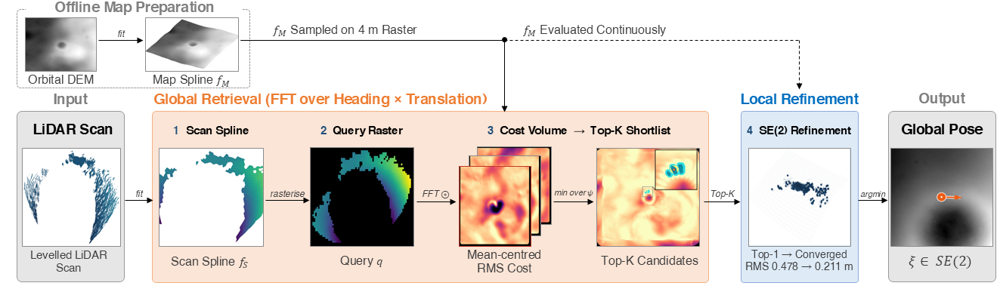
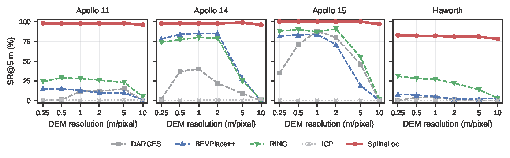
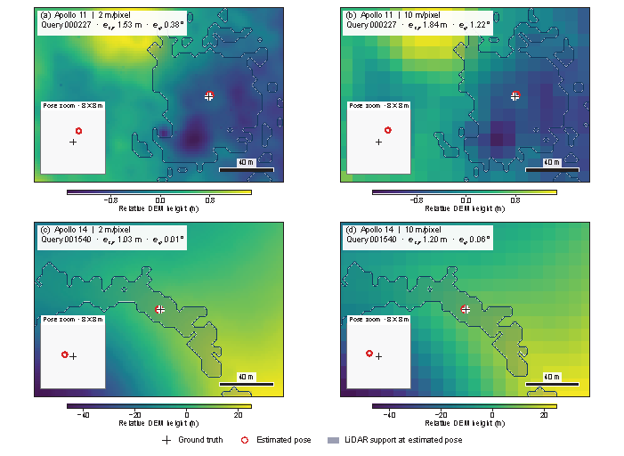

A dense rover LiDAR scan is registered to a coarse orbital DEM to recover the rover's global planar pose, across a large viewpoint and resolution gap.
Paper under double-anonymous review
Long-range lunar rovers rely on dead-reckoning that drifts without bound, so periodic global fixes are needed to keep the pose estimate stable over a traverse. Orbital digital elevation models (DEMs) offer globally referenced terrain, but their coarse sampling differs substantially from dense rover LiDAR observations. We present SplineLoc, a single-scan LiDAR-to-DEM localization method that searches the full extent of a supplied DEM without position or heading initialization, terrain-landmark extraction, or a reference-scan database.
Given a scan levelled using externally supplied roll and pitch, we represent the DEM and scan as cubic B-spline height fields, providing a common continuous representation for height comparison. An offset-invariant height objective decomposes into masked cross-correlations, enabling FFT evaluation over lattice translations at sampled headings. Retained candidates are then refined and re-ranked using raw LiDAR points and the analytic gradient of the map height field.
On four lunar terrains simulated from real orbital topography and six DEM resolutions from 0.25 to 10 m/pixel, one configuration achieved the highest SR@5m in all 24 site–resolution conditions. Mean SR@5m remained 91.75% at 10 m/pixel, compared with 2.75% for the strongest baseline at that resolution. Performance also remained high on the 2000 × 2000 m Apollo 14 and Apollo 15 maps, indicating that the method remains effective under both substantial DEM coarsening and map-wide search over large terrain regions. Replacing the simulation-derived reference maps with aligned native orbital products changed SR@5m by at most two percentage points, suggesting that localization is driven by terrain structure preserved across map representations rather than fine-scale details specific to the simulation.
Index Terms — Lunar Rover, Global Localization, LiDAR-to-DEM Registration, Cross-View Localization, B-Spline Height Field



The source code will be released publicly upon acceptance. The repository link will be added here in the camera-ready version.
% Citation withheld during double-anonymous review. % The BibTeX entry will be added in the camera-ready version.